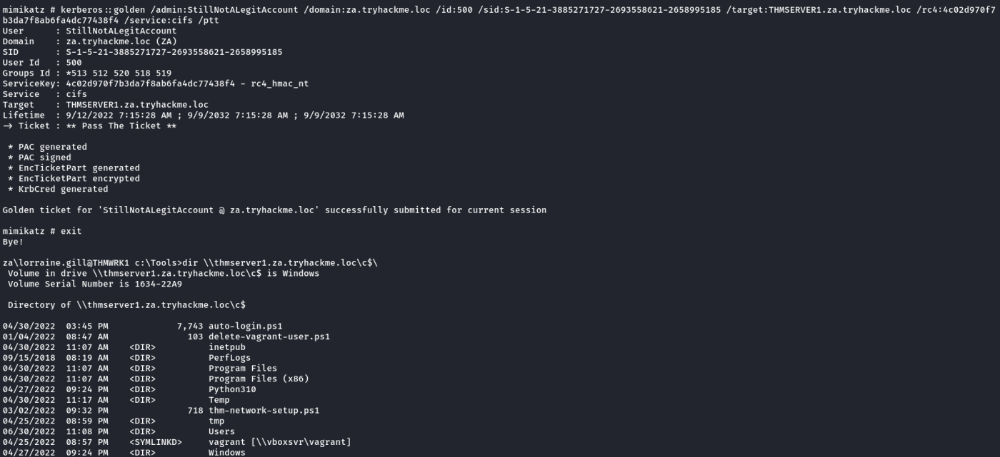

Persistence Through Tickets
As discussed in the previous tasks, we often want to persist through service accounts with delegation permissions to forge silver and golden tickets. But what are those exactly, and why does every blue team tabletop exercise end with someone shouting: "Flush all golden and silver tickets!".
Tickets to the Chocolate Factory
Before getting into golden and silver tickets, we first just need to do a quick recap on Kerberos authentication. The diagram below shows the normal flow for Kerberos authentication:
The user makes an AS-REQ to the Key Distribution Centre (KDC) on the DC that includes a timestamp encrypted with the user's NTLM hash. Essentially, this is the request for a Ticket Granting Ticket (TGT). The DC checks the information and sends the TGT to the user. This TGT is signed with the KRBTGT account's password hash that is only stored on the DC. The user can now send this TGT to the DC to request a Ticket Granting Service (TGS) for the resource that the user wants to access. If the TGT checks out, the DC responds to the TGS that is encrypted with the NTLM hash of the service that the user is requesting access for. The user then presents this TGS to the service for access, which can verify the TGS since it knows its own hash and can grant the user access.
With all of that background theory being said, it is time to look into Golden and Silver tickets.
Golden Tickets
Golden Tickets are forged TGTs. What this means is we bypass steps 1 and 2 of the diagram above, where we prove to the DC who we are. Having a valid TGT of a privileged account, we can now request a TGS for almost any service we want. In order to forge a golden ticket, we need the KRBTGT account's password hash so that we can sign a TGT for any user account we want. Some interesting notes about Golden Tickets:
▪ By injecting at this stage of the Kerberos process, we don't need the password hash of the account we want to impersonate since we bypass that step. The TGT is only used to prove that the KDC on a DC signed it. Since it was signed by the KRBTGT hash, this verification passes and the TGT is declared valid no matter its contents.
▪ Speaking of contents, the KDC will only validate the user account specified in the TGT if it is older than 20 minutes. This means we can put a disabled, deleted, or non-existent account in the TGT, and it will be valid as long as we ensure the timestamp is not older than 20 minutes.
▪ Since the policies and rules for tickets are set in the TGT itself, we could overwrite the values pushed by the KDC, such as, for example, that tickets should only be valid for 10 hours. We could, for instance, ensure that our TGT is valid for 10 years, granting us persistence.
▪ By default, the KRBTGT account's password never changes, meaning once we have it, unless it is manually rotated, we have persistent access by generating TGTs forever.
▪ The blue team would have to rotate the KRBTGT account's password twice, since the current and previous passwords are kept valid for the account. This is to ensure that accidental rotation of the password does not impact services.
▪ Rotating the KRBTGT account's password is an incredibly painful process for the blue team since it will cause a significant amount of services in the environment to stop working. They think they have a valid TGT, sometimes for the next couple of hours, but that TGT is no longer valid. Not all services are smart enough to release the TGT is no longer valid (since the timestamp is still valid) and thus won't auto-request a new TGT.
▪ Golden tickets would even allow you to bypass smart card authentication, since the smart card is verified by the DC before it creates the TGT.
We can generate a golden ticket on any machine, even one that is not domain-joined (such as our own attack machine), making it harder for the blue team to detect.
Apart from the KRBTGT account's password hash, we only need the domain name, domain SID, and user ID for the person we want to impersonate. If we are in a position where we can recover the KRBTGT account's password hash, we would already be in a position where we can recover the other pieces of the required information.
Silver Tickets
Silver Tickets are forged TGS tickets. So now, we skip all communication (Step 1-4 in the diagram above) we would have had with the KDC on the DC and just interface with the service we want access to directly. Some interesting notes about Silver Tickets:
▪ The generated TGS is signed by the machine account of the host we are targeting.
▪ The main difference between Golden and Silver Tickets is the number of privileges we acquire. If we have the KRBTGT account's password hash, we can get access to everything. With a Silver Ticket, since we only have access to the password hash of the machine account of the server we are attacking, we can only impersonate users on that host itself. The Silver Ticket's scope is limited to whatever service is targeted on the specific server.
▪ Since the TGS is forged, there is no associated TGT, meaning the DC was never contacted. This makes the attack incredibly dangerous since the only available logs would be on the targeted server. So while the scope is more limited, it is significantly harder for the blue team to detect.
▪ Since permissions are determined through SIDs, we can again create a non-existing user for our silver ticket, as long as we ensure the ticket has the relevant SIDs that would place the user in the host's local administrators group.
▪ The machine account's password is usually rotated every 30 days, which would not be good for persistence. However, we could leverage the access our TGS provides to gain access to the host's registry and alter the parameter that is responsible for the password rotation of the machine account. Thereby ensuring the machine account remains static and granting us persistence on the machine.
▪ While only having access to a single host might seem like a significant downgrade, machine accounts can be used as normal AD accounts, allowing you not only administrative access to the host but also the means to continue enumerating and exploiting AD as you would with an AD user account.
Forging Tickets for Fun and Profit
Now that we have explained the basics for Golden and Silver Tickets, let's generate some. You will need the NTLM hash of the KRBTGT account, which you should now have due to the DC Sync performed in the previous task. Furthermore, make a note of the NTLM hash associated with the THMSERVER1 machine account since we will need this one for our silver ticket. You can find this information in the DC dump that you performed. The last piece of information we need is the Domain SID. Using our low-privileged SSH terminal on THMWRK1, we can use the AD-RSAT cmdlet to recover this information:
For NTLM hash of KRBTGT & Machine Account we need a high privilege access. (Assuming we have that as in Last Section)
How, the Last information can be recovered using any account. ( I will use the credential provided)
Get-ADDomain
Now, we can relaunch mimikatz:[Golden Ticket]
kerberos::golden /admin:ReallyNotALegitAccount /domain:za.tryhackme.loc /id:500 /sid:S-1-5-21-3885271727-2693558621-2658995185 /krbtgt:16f9af38fca3ada405386b3b57366082 /endin:600 /renewmax:10080 /ptt
Parameters explained:
• /admin - The username we want to impersonate. This does not have to be a valid user.
• /domain - The FQDN of the domain we want to generate the ticket for.
• /id -The user RID. By default, Mimikatz uses RID 500, which is the default Administrator account RID.
• /sid -The SID of the domain we want to generate the ticket for.
• /krbtgt -The NTLM hash of the KRBTGT account.
• /endin - The ticket lifetime. By default, Mimikatz generates a ticket that is valid for 10 years. The default Kerberos policy of AD is 10 hours (600 minutes)
• /renewmax -The maximum ticket lifetime with renewal. By default, Mimikatz generates a ticket that is valid for 10 years. The default Kerberos policy of AD is 7 days (10080 minutes)
• /ptt - This flag tells Mimikatz to inject the ticket directly into the session, meaning it is ready to be used.
We can verify that the golden ticket is working by running the dir command against the domain controller:
Exit, out of the session to reset the ticket as it was directly loaded.
Note: If we exclude /ptt, mimikatz will output the ticket to a file named ticket.kirbi which we can use as per need.
Even if the golden ticket has an incredibly long time, the blue team can still defend against this by simply rotating the KRBTGT password twice. If we really want to dig in our roots, we want to generate silver tickets, which are less likely to be discovered and significantly harder to defend against since the passwords of every machine account must be rotated. We can use the following Mimikatz command to generate a silver ticket:
Note: To get the NTLM of the machine account in question we can use the dump from previous task[Needs Privileged Access]
Now, we can relaunch mimikatz:[Silver Ticket]
kerberos::golden /admin:StillNotALegitAccount /domain:za.tryhackme.loc /id:500 /sid:S-1-5-21-3885271727-2693558621-2658995185 /target:THMSERVER1.za.tryhackme.loc /rc4:4c02d970f7b3da7f8ab6fa4dc77438f4 /service:cifs /ptt
Parameters explained:
• /admin - The username we want to impersonate. This does not have to be a valid user.
• /domain - The FQDN of the domain we want to generate the ticket for.
• /id -The user RID. By default, Mimikatz uses RID 500, which is the default Administrator account RID.
• /sid -The SID of the domain we want to generate the ticket for.
• /target - The hostname of our target server. Let's do THMSERVER1.za.tryhackme.loc, but it can be any domain-joined host.
• /rc4 - The NTLM hash of the machine account of our target. Look through your DC Sync results for the NTLM hash of THMSERVER1$. The $ indicates that it is a machine account.
• /service - The service we are requesting in our TGS. CIFS is a safe bet, since it allows file access.
• /ptt - This flag tells Mimikatz to inject the ticket directly into the session, meaning it is ready to be used.
We can verify that the silver ticket is working by running the dir command against THMSERVER1:

Note: If we exclude /ptt, mimikatz will output the ticket to a file named ticket.kirbi which we can use as per need.